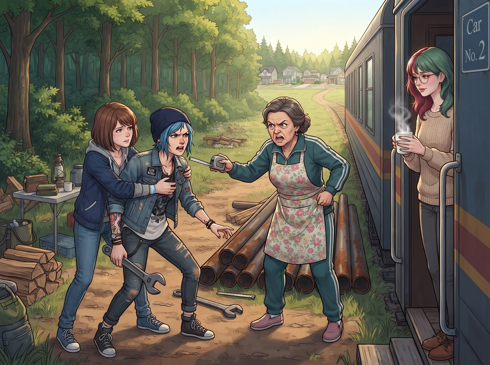

和平的小白兔

自從被 Max 的「死亡視線」嚴厲照射，並簽署了《禁止濫用聯邦級別毀滅性行政力量備忘錄》後，Lily 確實收斂了許多。
沒有了軍用衛星，沒有了五角大廈的機密級合規威脅，也沒有了動不動就把人送進稅務地獄的核彈級操作。但如果你以為這個年輕的行政黑魔法師會因此變成一個普通的宅女，那你就太低估「微觀官僚主義」的威力了。
當 Lily 被剝奪了戰略武器之後，她將那顆恐怖的大腦，精準地轉向了西雅圖一帶的市井生活與微觀經濟學。
以下是 Lily 失去核按鈕後，在二號車廂的「和平日常」。
一、超市
每週五下午，是二號車廂採購物資的時間。
以前 Chloe 總是隨便抓起東西就扔進購物車，但現在，這項任務被 Lily 全面接管，並升級為一場名為「抗通膨對沖」的精密作戰。
「Max 學姐，請將這張 Safeway 的數位會員條碼，與這張剪下來的製造商折價券一起使用。然後，用 Victoria 學姐那張本季生鮮類別返現百分之五的 Chase 信用卡結帳。」
「用我的卡？」站在一旁的 Victoria 挑了挑眉。
「是的。畢竟這張卡上印著您的姓氏，」Lily 平靜地說，「讓它為您的家族做點貢獻，我覺得很合理。」
Lily 站在收銀台前，推了推圓框眼鏡。她沒有駭進超市的後台系統，她只是把超市公開的促銷規則研究到了極限：哪些商品本週是會員價、哪些可以疊加製造商折價券、哪些臨期商品貼上了黃色的降價標籤、哪一種買二送一最划算。她甚至提前三天就排好了清單，算準了這週的促銷檔期。
當收銀員滿頭大汗地掃完最後一件商品時，螢幕上的原價是四百五十美元。
最終結帳金額：兩百六十一美元。
收銀員看著那張長達一公尺多的發票，眼神呆滯，彷彿見到了超市之神。
「另外，」Lily 禮貌地指了指發票上的某一行，「這瓶洗手乳，貨架上的標價是三點九九美元，但結帳時掃出來的是五點四九。根據貴店貼在入口的『掃描價格保證』，價格不符的商品可以免費取得。」
收銀員愣了兩秒，回頭看了一眼入口那張他自己可能從來沒讀過的告示，然後默默地把那瓶洗手乳的費用退了回去。
「謝謝。」Lily 乖巧地接過洗手乳，放進了購物袋。
二、圍籬
二號車廂所在的營地位於森林邊緣，平時很少有人經過。但最近，林道的另一頭新開發了一個小社區。
某天，一位來自那個社區的大媽，氣沖沖地拿著捲尺來到營地，指著 Chloe 堆在車廂外的那幾根生鏽鋼管大吼大叫，說她們製造視覺污染、違規堆放工業垃圾，威脅要向社區管委會舉報。
Chloe 剛要拿起扳手罵人，Max 趕緊按住了她。
這時，Lily 端著熱牛奶走了出來。
她沒有打電話給州長，也沒有去查任何人的稅。她只是平靜地站在大媽面前，溫和地開口：
「下午好，女士。我先說明一件事：我們這塊地，不屬於任何社區管委會的管轄範圍。您所在社區的 HOA 規章，只約束加入那個社區的住戶，對這裡沒有效力。」
大媽的臉漲紅了，張嘴就要反駁。
但 Lily 接著說了下一句：
「不過，您說得對。那堆鋼管確實不好看，從林道上看過來也很刺眼。這個週末之前，我們會把它們移到車廂後面，再加一道圍籬擋起來。」
大媽愣住了。她準備好的一肚子火，突然沒了地方發。
「……那、那就好。」她結結巴巴地說完，拿著捲尺走了。
那個週末，Chloe 一邊罵罵咧咧，一邊把鋼管全部搬到了車廂後面，用幾塊舊木板釘了一道圍籬。Kate 看那道圍籬光禿禿的有點可憐，在底下種了一排攀藤玫瑰。
一個月後，玫瑰爬滿了半面圍籬。那位大媽再次經過林道時，在圍籬前停下腳步，拿出手機拍了一張照片。
全程沒有流血，沒有聯邦機構，也沒有任何人被按在地上摩擦。
三、翻譯
Kate 每週都會為了青少年庇護所的經費發愁，經常熬夜烤小餅乾去義賣，換來一點微薄的捐款。
Lily 看不下去這種極度低效的情感勞動。但她沒有去動任何人的銀行帳戶，而是直接坐到了 Kate 身邊。
「Kate 學姐，義賣餅乾的投資回報率太低了。」Lily 打開筆電，「您做的事情很有價值，只是還沒有被翻譯成資助方看得懂的語言。」
「翻譯？」
「是的。您每週末帶庇護所的孩子們烤餅乾、照顧植物，教他們秤量、計時、按步驟完成一件事，讓他們在一個安全的地方待上一個下午。」Lily 一邊說，一邊在文件上打字，「在補助申請書裡，這叫作『青少年生活技能培養與社區融入計畫』。每一個字都是真的，只是換了一種說法。」
那個下午，Lily 幫 Kate 研究了西雅圖市政府和幾家地方基金會當年度的資助重點，挑出三個和庇護所的工作真正對得上的項目，一份一份地填好申請表。預算表、成果指標、參與人數，全部照實填寫，連 Kate 平常隨手記下的孩子們的出席紀錄，都被整理成了附件。
兩個月後，庇護所收到了一封核准通知，和一張兩萬五千美元的支票。
Kate 捧著那封信，眼眶都紅了。
Lily 只是平靜地喝了一口牛奶：「善良不需要苦哈哈地熬夜，學姐。善良需要的是精確的關鍵字，和一張填對了的表格。」
四、網
那天晚上，二號車廂裡難得沒有任何吵鬧。
Chloe 看著冰箱裡塞滿的、用半價換來的和牛與精釀啤酒；Victoria 滿意地翻看著 Lily 幫她整理的、一絲不苟的畫廊稅務報表；Kate 則開心地替庇護所的孩子們打包著新買的冬裝。
Max 靠在沙發上，看著那個穿著米色針織衫、正在安靜地玩《星露谷物語》的 Lily。別人在這款療癒系農場遊戲裡種田、釣魚、談戀愛；她的螢幕旁邊卻開著一張試算表，精確算出了每一季回報率最高的作物排程，連哪一天該去鎮上賣藍莓都排好了。
「妳怎麼不玩以前那個了？」Max 忍不住問，「就是那個……外星殖民地，會把俘虜的器官拆下來賣錢的那個。」
「《邊緣世界》嗎？」Lily 頭也不抬，「存檔還在。那個殖民地目前經營得非常健康，器官出口的月營收很穩定。」
她停下滑鼠，轉過頭，眨了眨那雙純潔無瑕的眼睛：
「Max 學姐有興趣的話，我可以把存檔分享給您。我們可以一起玩。」
「不、不用了！」Max 瘋狂搖頭，差點把手裡的茶灑出來，「我、我覺得種田很好！種田非常好！妳繼續種！」
「好的。」Lily 乖巧地轉回螢幕，點了一下滑鼠，讓她的小人拿著澆水壺，走向那片按收益率排得整整齊齊的藍莓田。
Max 突然意識到，禁止 Lily 使用「核武器」，並沒有削弱這個黑魔法師的威力。反而讓她將那些冰冷的行政力量，化作了一張綿密而溫柔的網，把這個流浪漢股份有限公司裡的每一個人，都穩穩地托住了。
Max 舉起寶麗來，對著安靜敲擊滑鼠的 Lily 按下了快門。
「喀嚓。」
相紙吐出，Max 在背面寫下：
『規則第七十九條：不要因為黑魔法師放下了魔杖，就以為她變成了麻瓜。當她開始認真對待超市折價券和補助申請表時，她依然是這個宇宙裡最可靠、也最可怕的守護神。』